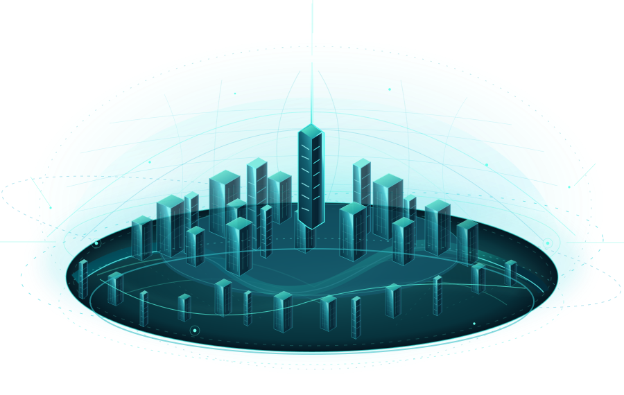

35.00/ 100
Community wellbeing index
CODED™ Civilization is a synthetic world engine for exploring coordination, resource allocation and evidence-gated intelligence — grounded in deterministic software, not fictional claims of live-world control.

Interact with the actual bounded rules of CODED's Python world-state engine, mirrored locally in the browser.
Separate what the software executed, what was signed, and what remains unverified.
Browser-only · no upload
Inspect a copy of your JSONL journal locally. This viewer does not verify signatures; use your trusted CLI verifier for cryptographic integrity.
Designed to evolve from local simulation into verifiable coordination, with every capability identified by its actual maturity.
Bounded fictional world-state simulation with deterministic replay and adjustable scenario inputs.
IMPLEMENTED · LOCALOperator-hosted authenticated local inference and bounded compute with independently checked software receipts.
LOCAL INTEGRATIONEd25519 software signatures and hash-linked receipts; key custody and anchoring are separate future work.
SOFTWARE EVIDENCECoordination, adaptive middleware, federated edge systems and physical integration remain design-stage objectives.
ROADMAP